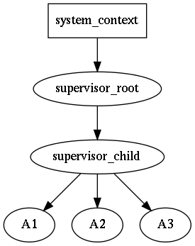

|
rotor
Event loop friendly C++ actor micro-framework
|


|
address is runtime entity, served as subscription and delivery point. Any message can be sent to an address; any actor can subscribe on any kind of messages on any address. An address is generated by supervisor, address holds reference to supervisor.
message is runtime entity, which consists of destination address and user supplied mutable payload. Message are delivered to actors. The order of delivery messages is source-actor sequenced: if a source-actor generates messages m1 and then m2, that is is guaranteed that m1 will arrive to destination earlier then m2. Meanwhile there can be other messages for the destination from other senders. Sometimes, the approach is named per-sender-FIFO. The delivery itself to an actor is not guaranteed, not in the sense the rotor will loose it, but because the actor might be not yet ready for it (not subscribed), or the actor might be no longer ready for it (i.e. already unsubscribed). payload is mutable. It is user responsibility to allowed for an actor to change a payload in a thread-safe way, but it is recommended to do modifications only when it is known that an actor is single consumer of the message; if there are multiple consumers of the the messages it is recommended not to change the message, or provide synchronization mechanisms on the payload (discouraged, as locks/mutexes might lead to application deadlock).
The messaging in rotor resembles IP protocol: it is quite simple (compared to TCP), without delivery/strict delivery order guarantees, no streams, no timers etc., however solid foundation of distributed actors can be build on top of rotor, adding only required guarantees.
rotor supports reliable messaging via adopting request-response pattern: whenver request message is sent timeout timer is spawn, if the reply isn't delivered in time, the sender is notified about the occurred error. If the reply is sent twice by mistake, the second reply message will be silently discarded.
actor is runtime entity with user-defined reaction on incoming messages. An actor can send messages to other actors, as well as do interaction with with outer world (i.e. via loop, timers, I/O etc.). The main business-logic should be written in actors. An actor always is executed in the context of some supervisor.
Every actor has it's "main" address, used for rotor-internal messaging. In addition it can create as many as needed address ("identities"), which can be used for distinguishing replies.
supervisor is special kind of actor, which encapsulates infrastructure-logic, i.e. responsible for spawning/terminating actors, interaction with loop (timeouts), and for message dispatching/delivering. All messages sent by spawned actors, are put into outbound queue of supervisor. supervisor was designed to represent sequential execution context, similar to strand from [boost-asio] (in fact has strand object for rotor-boost); in other words all messages are delivered sequentially within the context of an supervisor, and it is safe to call one some actor's method from some other actor, located on the same supervisor, if needed.
locality is rotor-specific marker of sequential execution context. An supervisor might have an independent locality, i.e. execute only on its own (strand); or a list of supervisors might share the same locality. For some event loops (i.e. other then boost-asio), it it the only option. In other words it is "thread affinity" somewhat similar to cpu-affinity.
Supervisors might form a tree-like structure making some kind of hierarchy of responsibilities. This allows to build a robust application via controlled degradation of its services when leaf-actors are restarted in case of error, then their supervisors (with all actors) are restarted and so on the error propagates until the root supervisor. The child restart policy is user-defined for each supervisor individually. For more details see the article blog-cpp-supervisors.

For example, if actor A3 is going down, the supervisor_child will receive a message about it, and it might decide either to spawn A3 again, or if restart limit is reached, shutdown self and all other child actors A1 and A2. The supervisor_root will receive down message of supervisor_child, and the decision to restart supervisor_child (with all it's children) or to shutdown self should be made again.
Unlike supervisors in Erlang, the let-it-crash principle is not acceptable in C++, hence it is expected that actors will perform shutdown procedure. It is expected that an user will inherit supervisor class and write application specific reaction on an actor shutdown. For proper supervisor destruction, all externally held addresses should be destroyed.
It should be noted, that a "crash" is actually "controlled crash", i.e. ability of an actor to detect some non-fatal error state and notify about that to upstream supervisor. After that the supervisor asks for shutdown and the actor must confirm it (maybe after some delay, i.e. after asynchronous resources release). There is no magical remedy against abnormal failures, which lead to std::abort or std::terminate.
The system_context is runtime environment for supervisors, which holds loop or some other context, which should be accessible in thread-safe way. When an fatal error is encounted, it is delegated to system_context, which by default just prints it to std::cerr and invokes std::abort().
All rotor entities above use intrusive pointer approach from boost-smartptr, with the thread-safe atomic counters by default. If it is known, that rotor actors will be used strictly on single thread, then it is possible to use faster non-atomic counters.

(yellow - actor state, purple - actor methods, green - behavior methods, light blue - call/messages from an actor to supervisor; yellow - actor state, orange - call/messages from supervisor to an actor).
Short story: if you need customization, override init_start(), when your initialization (i.e. possible asynchronous resources acquisition) is finished call init_start(). For simple post-init (possibly synchronous) actions override init_finish(). Likewise, for suspending shutdown override shutdown_start() and call it later, once your resources will be (asynchronously) released. For simple post-shutdown (possibly synchronous) actions, override shutdown_finish()
Long story. An actor is constructed via a supervisor or in some thread-safe context (i.e. when supervisor is inactive). Then, within the same context the do_initialize method is invoked; it performs early initialization, i.e. subscription to rotor-message via the supervisor. The default behavior is created and plugged.
Then supervisor delivers a message for on_initialize method. By default actor calls records the init-message and calls init_start, which in its turn delegates initialization sequence to the behavior. The actor's behavior replies with confirmation to the init-message request and sets actor's state to INITIALIZED. Once the supervisor receives init-confirmation it sends start_actor_t messages, which, after receiving, advances actor's start to OPERATIONAL.
It is possible to "suspend" initialization by overriding init_start() method. For example it is possible to send messages to other actors, wait their replies, and if all is OK, continue/commit the initialization by calling init_start() of the base class. The init_start() method is good for asynchronous acquisition of resources, i.e. opening ports, connecting to other hosts etc.
Subscriptions to the additional local actor addresses can be performed here (if you need subscription confirmations before on_start, do subscribe before calling init_start()). If the actor subscribes to the external addresses, then, probably to avoid races, it should wait subscription confirmations and only then confirm initialization by calling init_start().
Note, however, that init-message is a request, i.e. it is timeout-supervised; the default supervisor behavior will ask for shutdown the actor in the case of init timeout.
The init_finish() will be invoked as the last step of the initialization.
The shutdown procedure goes in similar way: after receiving shutdown-message, it is recorded and shutdown_start() is invoked. Override it to suspend (postpone) actor shutdown procedure, and call it once actor will be ready, i.e. additional messages can be send to other actors and their responses can be waited, and only then shutdown can be continued.
After starting shutdown procedure actor unsubscribes itself from all associated addresses, so most likely it will be not able to receive any other (user-defined) messages.
As with init, the shutdown message is a request, i.e. it is timeout-supervised; the default supervisor behavior will delegate the error to system_context, which by default will abort the application. If the reaction should be tuned, the custom supervisor behavior should be plugged.
After unsubscription from all addresses, the behavior sends shutdown-confirmation, sets the actors status to SHUTTED_DOWN and then shutdown_finish() is called.
In the shutdown_finish() is the final method called by rotor. For example, external addresses should be released to avoid memory leaks.
 1.8.16
1.8.16